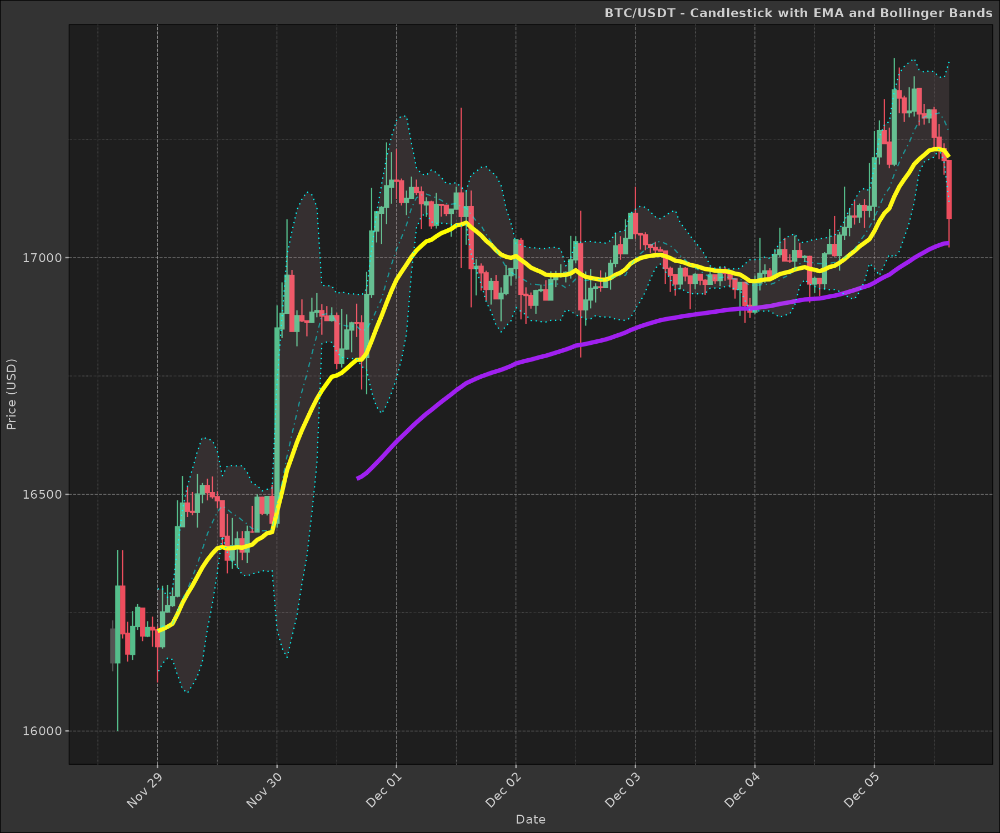
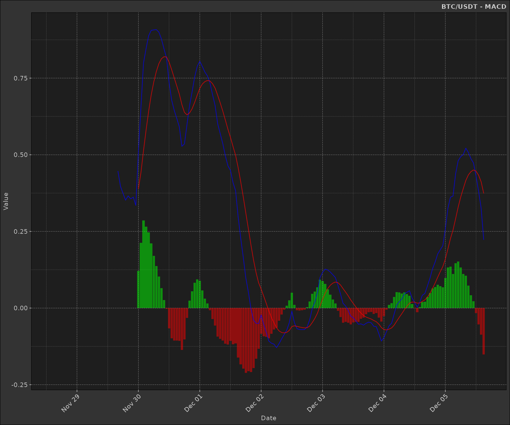
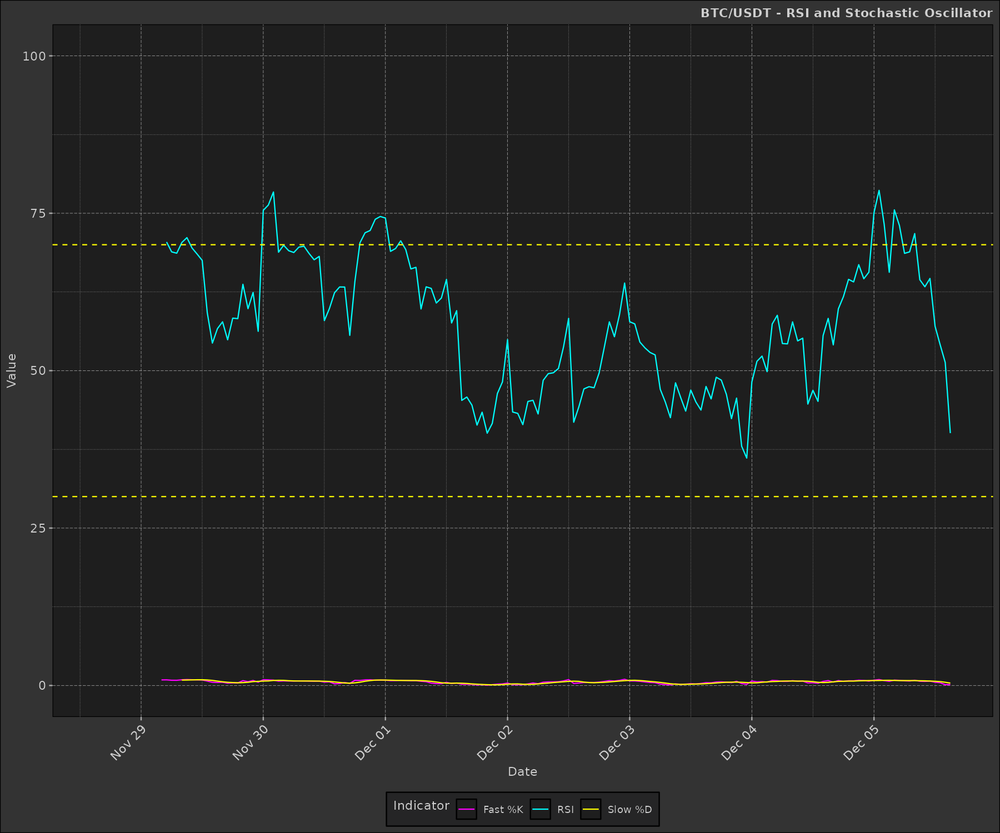

Understanding and Calculating Financial Indicators with dmplot
Source:vignettes/working-with-financial-data.Rmd
working-with-financial-data.RmdIntroduction
This vignette explains how to calculate and interpret common
financial indicators used in technical analysis. We’ll cover the
mathematics behind each indicator and provide R functions to calculate
them. Finally, we’ll demonstrate how to visualize these indicators using
the dmplot package.
Loading Sample Data
We’ll use the same sample data as in the README:
ticker <- "BTC/USDT"
dt <- kucoin::get_market_data(
symbols = ticker,
from = "2022-11-28 15:29:43 EST",
to = "2022-12-05 15:29:31 EST",
frequency = "1 hour"
)
head(dt)
#> symbol datetime open high low close volume
#> <char> <POSc> <num> <num> <num> <num> <num>
#> 1: BTC/USDT 2022-11-28 15:00:00 16215.3 16233.6 16126.0 16144.1 327.8979
#> 2: BTC/USDT 2022-11-28 16:00:00 16144.1 16382.6 16000.0 16305.9 837.5801
#> 3: BTC/USDT 2022-11-28 17:00:00 16305.9 16382.0 16195.4 16205.4 507.8351
#> 4: BTC/USDT 2022-11-28 18:00:00 16206.1 16230.7 16146.5 16162.6 252.3387
#> 5: BTC/USDT 2022-11-28 19:00:00 16161.7 16253.3 16150.1 16220.9 225.4121
#> 6: BTC/USDT 2022-11-28 20:00:00 16220.9 16268.0 16213.7 16261.0 169.2577
#> 1 variable(s) not shown: [turnover <num>]Calculating Financial Indicators
1. Exponential Moving Average (EMA)
The EMA gives more weight to recent prices, making it more responsive to new information than a simple moving average.
Mathematics: For a series Y, the EMA at time t is calculated as:
where α = 2 / (N + 1), and N is the number of periods.
ema <- function(x, n, wilder = TRUE) {
as.list(as.data.frame(TTR::EMA(x, n = n, wilder = wilder)))
}
dt[, `:=`(
ema_short = ema(close, n = 10, wilder = TRUE)[[1]],
ema_long = ema(close, n = 50, wilder = TRUE)[[1]]
)]
head(dt)
#> symbol datetime open high low close volume
#> <char> <POSc> <num> <num> <num> <num> <num>
#> 1: BTC/USDT 2022-11-28 15:00:00 16215.3 16233.6 16126.0 16144.1 327.8979
#> 2: BTC/USDT 2022-11-28 16:00:00 16144.1 16382.6 16000.0 16305.9 837.5801
#> 3: BTC/USDT 2022-11-28 17:00:00 16305.9 16382.0 16195.4 16205.4 507.8351
#> 4: BTC/USDT 2022-11-28 18:00:00 16206.1 16230.7 16146.5 16162.6 252.3387
#> 5: BTC/USDT 2022-11-28 19:00:00 16161.7 16253.3 16150.1 16220.9 225.4121
#> 6: BTC/USDT 2022-11-28 20:00:00 16220.9 16268.0 16213.7 16261.0 169.2577
#> 3 variable(s) not shown: [turnover <num>, ema_short <num>, ema_long <num>]2. Bollinger Bands
Bollinger Bands consist of a middle band (usually a simple moving average) and an upper and lower band that are standard deviations away from the middle band.
Mathematics:
- Middle Band = SMA(n)
- Upper Band = SMA(n) + k * σ(n)
- Lower Band = SMA(n) - k * σ(n)
where SMA(n) is the n-period simple moving average, σ(n) is the n-period standard deviation, and k is the number of standard deviations (usually 2).
bb <- function(close, n = 20, sd = 2) {
as.list(as.data.frame(TTR::BBands(close, n = n, sd = sd)))
}
dt[, c("bb_lower", "bb_mavg", "bb_upper", "bb_pct") := bb(close, n = 10, sd = 2)]
head(dt)
#> symbol datetime open high low close volume
#> <char> <POSc> <num> <num> <num> <num> <num>
#> 1: BTC/USDT 2022-11-28 15:00:00 16215.3 16233.6 16126.0 16144.1 327.8979
#> 2: BTC/USDT 2022-11-28 16:00:00 16144.1 16382.6 16000.0 16305.9 837.5801
#> 3: BTC/USDT 2022-11-28 17:00:00 16305.9 16382.0 16195.4 16205.4 507.8351
#> 4: BTC/USDT 2022-11-28 18:00:00 16206.1 16230.7 16146.5 16162.6 252.3387
#> 5: BTC/USDT 2022-11-28 19:00:00 16161.7 16253.3 16150.1 16220.9 225.4121
#> 6: BTC/USDT 2022-11-28 20:00:00 16220.9 16268.0 16213.7 16261.0 169.2577
#> 7 variable(s) not shown: [turnover <num>, ema_short <num>, ema_long <num>, bb_lower <num>, bb_mavg <num>, bb_upper <num>, bb_pct <num>]3. Moving Average Convergence Divergence (MACD)
MACD is a trend-following momentum indicator that shows the relationship between two moving averages of a security’s price.
Mathematics: MACD Line = EMA(12) - EMA(26) Signal Line = EMA(9) of MACD Line MACD Histogram = MACD Line - Signal Line
macd <- function(x, fast = 12, slow = 26, signal = 9) {
as.list(as.data.frame(TTR::MACD(x, fast, slow, signal)))
}
dt[, c("macd", "macd_signal") := macd(close, fast = 12, slow = 26, signal = 9)]
dt[, macd_diff := macd - macd_signal]
head(dt)
#> symbol datetime open high low close volume
#> <char> <POSc> <num> <num> <num> <num> <num>
#> 1: BTC/USDT 2022-11-28 15:00:00 16215.3 16233.6 16126.0 16144.1 327.8979
#> 2: BTC/USDT 2022-11-28 16:00:00 16144.1 16382.6 16000.0 16305.9 837.5801
#> 3: BTC/USDT 2022-11-28 17:00:00 16305.9 16382.0 16195.4 16205.4 507.8351
#> 4: BTC/USDT 2022-11-28 18:00:00 16206.1 16230.7 16146.5 16162.6 252.3387
#> 5: BTC/USDT 2022-11-28 19:00:00 16161.7 16253.3 16150.1 16220.9 225.4121
#> 6: BTC/USDT 2022-11-28 20:00:00 16220.9 16268.0 16213.7 16261.0 169.2577
#> 10 variable(s) not shown: [turnover <num>, ema_short <num>, ema_long <num>, bb_lower <num>, bb_mavg <num>, bb_upper <num>, bb_pct <num>, macd <num>, macd_signal <num>, macd_diff <num>]4. Relative Strength Index (RSI)
RSI is a momentum oscillator that measures the speed and change of price movements.
Mathematics:
where RS = Average Gain / Average Loss
- Average Gain = [(previous avg. gain) x 13 + current gain] / 14
- Average Loss = [(previous avg. loss) x 13 + current loss] / 14
rsi <- function(x, n = 14) {
as.list(as.data.frame(TTR::RSI(x, n = n)))
}
dt[, rsi := rsi(close, n = 14)[[1]]]
head(dt)
#> symbol datetime open high low close volume
#> <char> <POSc> <num> <num> <num> <num> <num>
#> 1: BTC/USDT 2022-11-28 15:00:00 16215.3 16233.6 16126.0 16144.1 327.8979
#> 2: BTC/USDT 2022-11-28 16:00:00 16144.1 16382.6 16000.0 16305.9 837.5801
#> 3: BTC/USDT 2022-11-28 17:00:00 16305.9 16382.0 16195.4 16205.4 507.8351
#> 4: BTC/USDT 2022-11-28 18:00:00 16206.1 16230.7 16146.5 16162.6 252.3387
#> 5: BTC/USDT 2022-11-28 19:00:00 16161.7 16253.3 16150.1 16220.9 225.4121
#> 6: BTC/USDT 2022-11-28 20:00:00 16220.9 16268.0 16213.7 16261.0 169.2577
#> 11 variable(s) not shown: [turnover <num>, ema_short <num>, ema_long <num>, bb_lower <num>, bb_mavg <num>, bb_upper <num>, bb_pct <num>, macd <num>, macd_signal <num>, macd_diff <num>, ...]5. Stochastic Oscillator
The Stochastic Oscillator is a momentum indicator that shows the location of the close relative to the high-low range over a set number of periods.
Mathematics:
stoch <- function(high, low, close, n = 14, k = 3, d = 3) {
as.list(as.data.frame(TTR::stoch(HLC = data.frame(high, low, close), nFastK = n, nFastD = k, nSlowD = d)))
}
dt[, c("fastK", "fastD", "slowD") := stoch(high, low, close, n = 14, k = 3, d = 3)]
head(dt)
#> symbol datetime open high low close volume
#> <char> <POSc> <num> <num> <num> <num> <num>
#> 1: BTC/USDT 2022-11-28 15:00:00 16215.3 16233.6 16126.0 16144.1 327.8979
#> 2: BTC/USDT 2022-11-28 16:00:00 16144.1 16382.6 16000.0 16305.9 837.5801
#> 3: BTC/USDT 2022-11-28 17:00:00 16305.9 16382.0 16195.4 16205.4 507.8351
#> 4: BTC/USDT 2022-11-28 18:00:00 16206.1 16230.7 16146.5 16162.6 252.3387
#> 5: BTC/USDT 2022-11-28 19:00:00 16161.7 16253.3 16150.1 16220.9 225.4121
#> 6: BTC/USDT 2022-11-28 20:00:00 16220.9 16268.0 16213.7 16261.0 169.2577
#> 14 variable(s) not shown: [turnover <num>, ema_short <num>, ema_long <num>, bb_lower <num>, bb_mavg <num>, bb_upper <num>, bb_pct <num>, macd <num>, macd_signal <num>, macd_diff <num>, ...]Visualizing Indicators with dmplot
Now that we have calculated our indicators, let’s use
dmplot to visualize them.
Candlestick Chart with EMA and Bollinger Bands
p <- ggplot(dt, aes(x = datetime, open = open, high = high, low = low, close = close)) +
dmplot::stat_candlestick() +
dmplot::stat_movingaverages(aes(short = ema_short, long = ema_long),
alpha = list(mavg = 0.5)) +
dmplot::stat_bollingerbands(aes(ymin = bb_lower, mavg = bb_mavg, ymax = bb_upper),
colour = list("pink", "cyan", "cyan")) +
scale_x_datetime(date_breaks = "1 day", date_labels = "%b %d") +
labs(title = paste(ticker, "- Candlestick with EMA and Bollinger Bands"),
x = "Date", y = "Price (USD)") +
dmplot::theme_dereck_dark() +
theme(axis.text.x = element_text(angle = 45, hjust = 1))
print(p)
MACD Plot
macd_plot <- ggplot(dt, aes(x = datetime)) +
dmplot::stat_macd(aes(macd = macd, macd_signal = macd_signal, macd_diff = macd_diff)) +
scale_x_datetime(date_breaks = "1 day", date_labels = "%b %d") +
labs(title = paste(ticker, "- MACD"),
x = "Date", y = "Value") +
dmplot::theme_dereck_dark() +
theme(axis.text.x = element_text(angle = 45, hjust = 1))
print(macd_plot)
RSI and Stochastic Oscillator
rsi_stoch_plot <- ggplot(dt, aes(x = datetime)) +
geom_line(aes(y = rsi, color = "RSI")) +
geom_line(aes(y = fastK, color = "Fast %K")) +
geom_line(aes(y = slowD, color = "Slow %D")) +
geom_hline(yintercept = c(30, 70), linetype = "dashed", color = "yellow") +
scale_x_datetime(date_breaks = "1 day", date_labels = "%b %d") +
scale_y_continuous(limits = c(0, 100)) +
scale_color_manual(values = c("RSI" = "cyan", "Fast %K" = "magenta", "Slow %D" = "yellow")) +
labs(title = paste(ticker, "- RSI and Stochastic Oscillator"),
x = "Date", y = "Value", color = "Indicator") +
dmplot::theme_dereck_dark() +
theme(axis.text.x = element_text(angle = 45, hjust = 1))
print(rsi_stoch_plot)
Conclusion
This vignette has demonstrated how to calculate and visualize various
financial indicators using the dmplot package. We’ve
covered the mathematics behind each indicator and provided R functions
to calculate them. By combining these indicators with the visualization
capabilities of dmplot, you can create comprehensive and
insightful financial charts.
Remember that while these indicators can be powerful tools for technical analysis, they should be used in conjunction with other forms of analysis and not relied upon exclusively for making investment decisions.
For more advanced usage and customisation options, refer to the
individual function documentation in the dmplot package and
explore combining multiple indicators to create more complex trading
strategies.